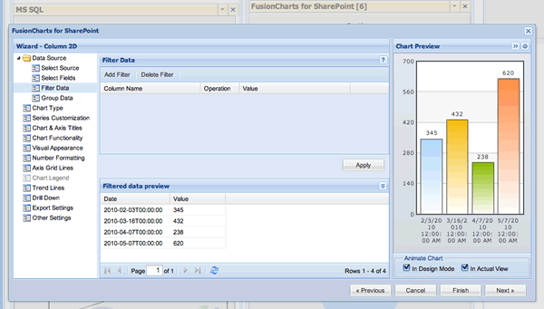
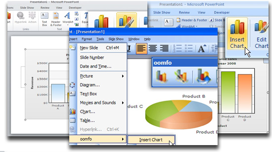
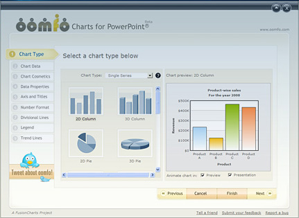
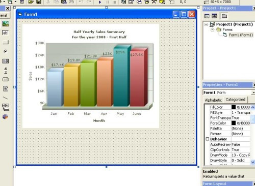
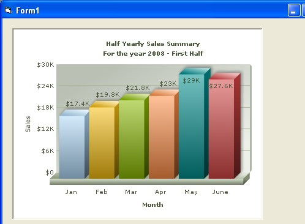
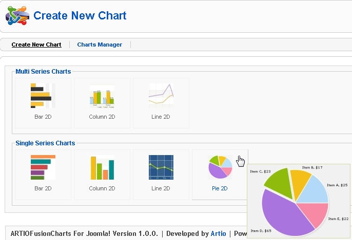
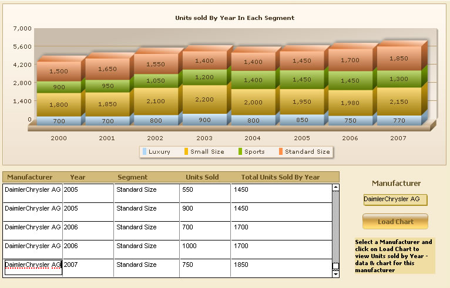
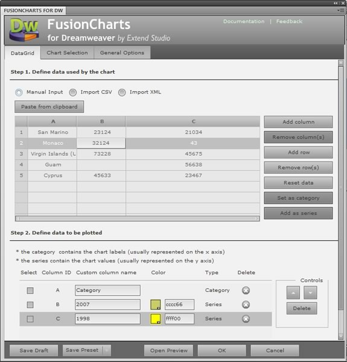

| Using FusionCharts in various applications |
|
FusionCharts can be used in a variety of applications such as Web development frameworks, CMS systems, Reporting systems etc. Any application that is served through a browser can use FusionCharts. If it is a Web framework or a web application where JavaScript is supported, then standard FusionCharts APIs can be used for providing data. In case JavaScript is not supported, then FlashVars can be used to pass data to FusionCharts. In this section, we showcase how FusionCharts can be implemented in various applications: |
| In SharePoint |
FusionCharts for SharePoint helps you build live charts within your SharePoint installation. Installed as a webpart, FusionCharts for SharePoint can connect to seven data sources including SharePoint Lists, Views, CSV files, MS SQL, Oracle, Excel and BDC. The charts can be extensively customized using the intuitive GUI. Please visit http://www.fusioncharts.com/sharepoint for more information. Shown below is a screenshot: |
|  |
| In Microsoft PowerPoint (Windows 32 bit) |
|
FusionCharts can be incorporated into Microsoft PowerPoint presentations using oomfo (http://oomfo.com). oomfo helps you create FusionCharts in PowerPoint visually, without having to write any code. It lets you connect to CSV data sources, customize chart properties and even export charts as images. oomfo provides an intuitive UI for quick configuration of charts. Given below are a few screenshots of oomfo: |
|   |
| In Adobe Flex |
Specialized version of FusionCharts is available for Adobe Flex. FusionCharts for Flex is a charting component that can be loaded in Adobe Flex. Using FusionCharts for Flex, you can render animated and data-driven charts and gauges in your Flex solutions. The product comes with Flex based APIs, which helps you to connect to native Flex data sources like Arrays, XML Collection, etc. FusionCharts for flex can be downloaded from http://www.fusioncharts.com/flex. |
| In Visual Basic 6 (Classic VB) |
FusionCharts can be loaded as an OCX control within VB6 applications. This control offers an extensive API that lets you easily embed the charts, save them as images and change data. FusionCharts for VB can be implemented in Visual Basic 6 as well as Visual C++ applications. A few screenshots are provided for your reference: |
|   |
| In Joomla |
FusionCharts Free for Joomla is a charting component for Joomla. This is a FREE Joomla component which helps users of Joomla 1.5x to create exciting Flash charts for their Joomla sites. It is totally free to use and provides all standard chart types. ARTIO FusionCharts Free for Joomla comes with an intuitive GUI for configuring charts quickly and easily. Please visit http://www.fusioncharts.com/joomla to download FusionCharts for Joomla. Shown below is a screenshot: |
|  |
| In .NET WinForms (C# or VB) |
FusionCharts can be added to WinForms (C# or VB). This is done by adding Flash objects directly to WinForms and providing data through FlashVars. Following links provide detailed information on incorporating FusionCharts in WinForms:
|
| In FileMaker |
FileMaker Pro is a cross-platform relational database application that integrates a database engine with a GUI-based interface, allowing users to modify the database by dragging new elements into layouts, screens, or forms. FusionCharts can easily be added to FileMaker 8.5 (or above) using the WebViewer Object. Please visit http://www.fusioncharts.com/filemaker to use FusionCharts in FileMaker. Following is a snapshot of the blueprint application built using FusionCharts for FileMaker: |
|  |
| In Dreamweaver |
FusionCharts for Dreamweaver helps Web developers and designers create animated Flash charts using a GUI integrated into Dreamweaver. Using the intuitive GUI, you can build sales reports, financial data, website analytics, network data and more without writing any code. Please visit http://www.fusioncharts.com/dreamweaver for more details. Following is the screenshot of FusionCharts for Dreamweaver: |
|  |
| In WordPress |
FusionCharts can be implemented in WordPress with minimal coding. For more on this, please read the blog post - http://wordpress.org/support/topic/fusioncharts-in-your-wordpress-blog. |
| In Drupal |
|
FusionCharts Drupal module provides both a user interface for creating charts as well as an API to help developers integrate it with other modules. Using the API you can also connect to arrays and SQL queries. Drill-down is also supported. Please view an online demo here. Or, download from http://drupal.org/project/fusioncharts We are constantly working on integrating FusionCharts with newer technologies, applications and frameworks. To keep yourself posted on our latest developments, subscribe to our blog at http://blog.fusioncharts.com |